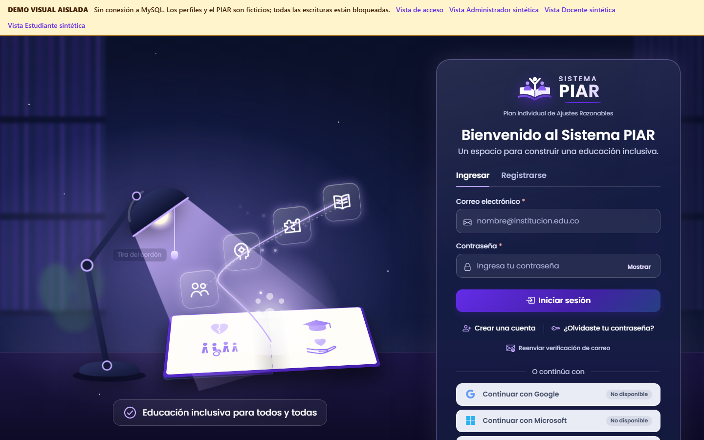

Entrada de Bitácora 01: Inicio de sesión
El usuario institucional ingresa su correo y su contraseña en el formulario de acceso. El navegador envía las credenciales a POST /api/auth/login; el servidor compara la contraseña con el hash bcrypt almacenado y, si la cuenta está activa, crea una sesión y la entrega en una cookie. Las cuentas pendientes de verificación, pendientes de aprobación o rechazadas no pueden crear sesión. Cuando el correo no existe, el servidor realiza igualmente una comparación bcrypt contra un hash ficticio, de modo que el tiempo de respuesta no revela qué correos están registrados.
Si la cuenta es la del Administrador inicial con contraseña temporal, el sistema obliga a definir una contraseña personal antes de abrir el panel. La pantalla incluye una escena animada decorativa (lámpara y libro) y opciones de acceso con Google, Microsoft y Apple, que aparecen marcadas como «No disponible» mientras el proveedor no esté configurado.
- Abrir la dirección del sistema sin una sesión activa.
- Escribir el correo institucional y la contraseña; el botón «Mostrar» permite revisar lo escrito.
- Pulsar «Iniciar sesión». Si los datos son válidos, el sistema carga la información y abre el Dashboard; si no, muestra el motivo en la zona de estado del formulario.
public/index.html · public/js/app.js (renderLogin, loginForm, login, renderInitialPasswordChange, completeInitialPasswordChange, refreshExternalAuthAvailability) · public/js/login-scene.js · public/js/api.js (apiLogin) · public/css/auth.css · backend/auth.js · backend/login-throttle.js · backend/password-policy.js

- Seguridad: contraseñas con bcrypt de costo 12 (
backend/auth.js); comparación contra un hash ficticio para correos inexistentes; cookie de sesiónHttpOnlyySameSite=Lax, conSecureen producción; limitación de intentos fallidos por par IP–cuenta, por IP y por cuenta (backend/login-throttle.js); contraseña nueva de 14 caracteres como mínimo y 72 bytes como máximo. - Fiabilidad:
login-throttle.test.js(solo cuentan los intentos fallidos y un acceso correcto limpia el contador),auth-registration.test.js(comparación sin recortar espacios, comparación bcrypt ante correos desconocidos, cuentas pendientes o rechazadas sin sesión),auth-session.test.js(una cookie malformada equivale a no tener sesión),initial-password-change.test.jsylogin-scene.test.js. - Usabilidad: etiquetas visibles y campos obligatorios marcados; acciones secundarias como botones accesibles con teclado; mensajes en una zona
aria-live; con movimiento reducido se muestra directamente la escena final. - Mantenibilidad: la escena vive en un módulo independiente (
login-scene.js) invocado dentro detry/catch, de modo que un fallo decorativo nunca bloquea el formulario; las reglas de contraseña están centralizadas enpassword-policy.js.
Implementada; pruebas unitarias aprobadas. El acceso con Google, Microsoft y Apple está programado, pero no se probó con un proveedor configurado.